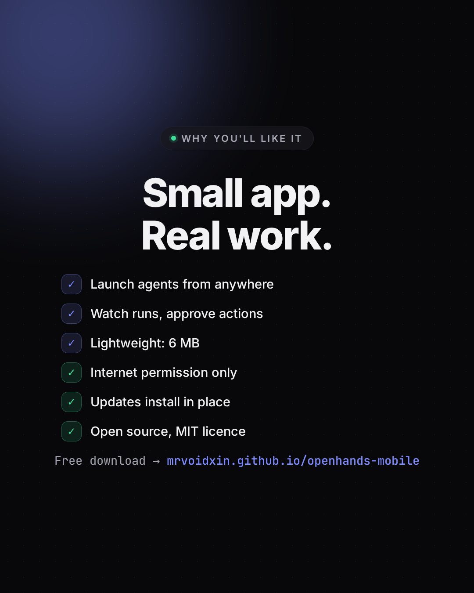
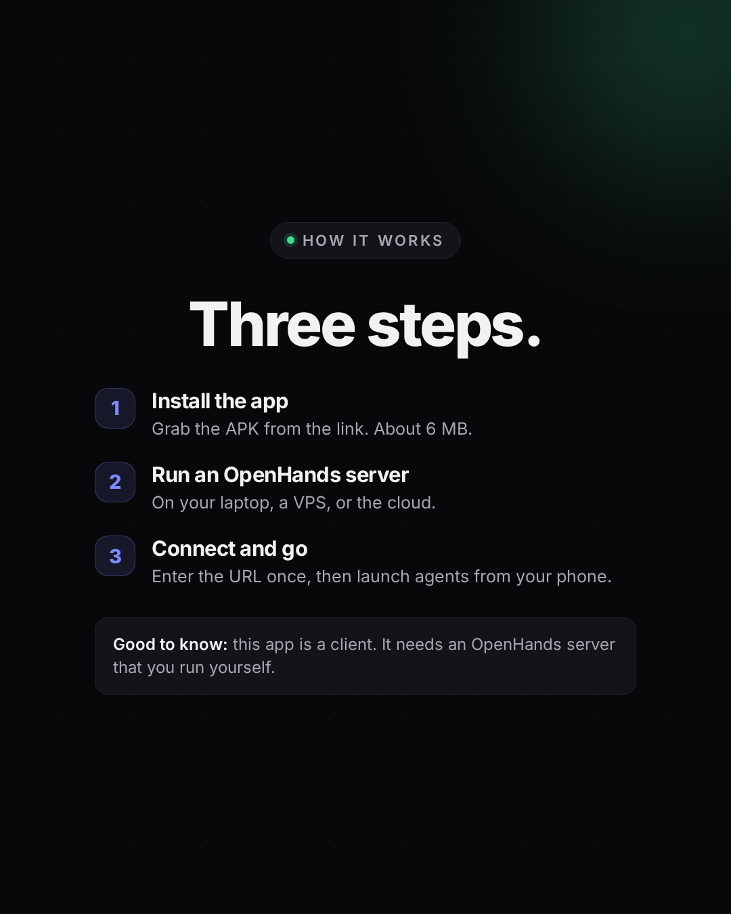
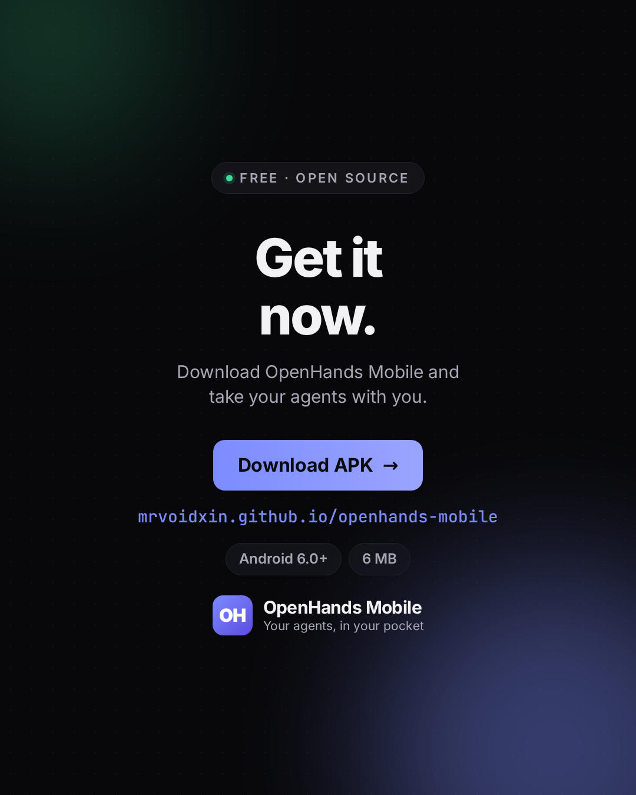
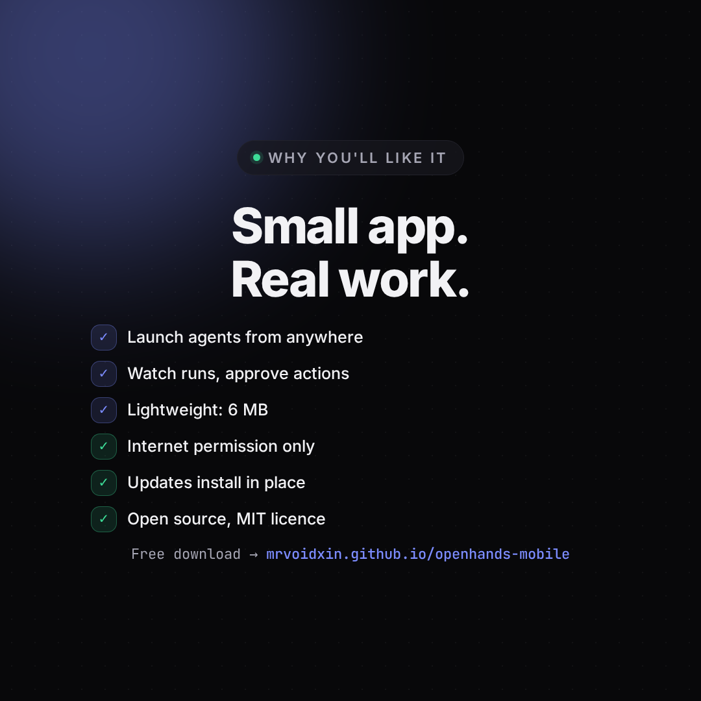
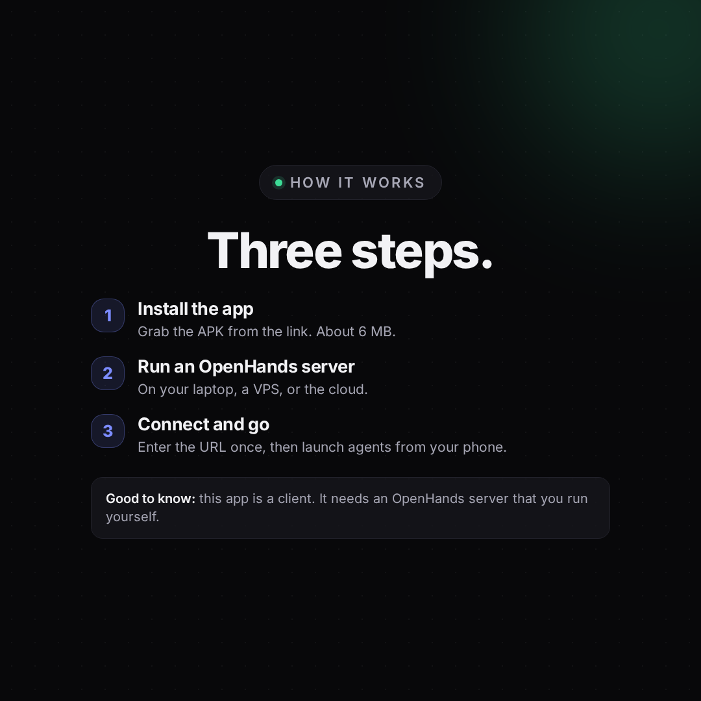
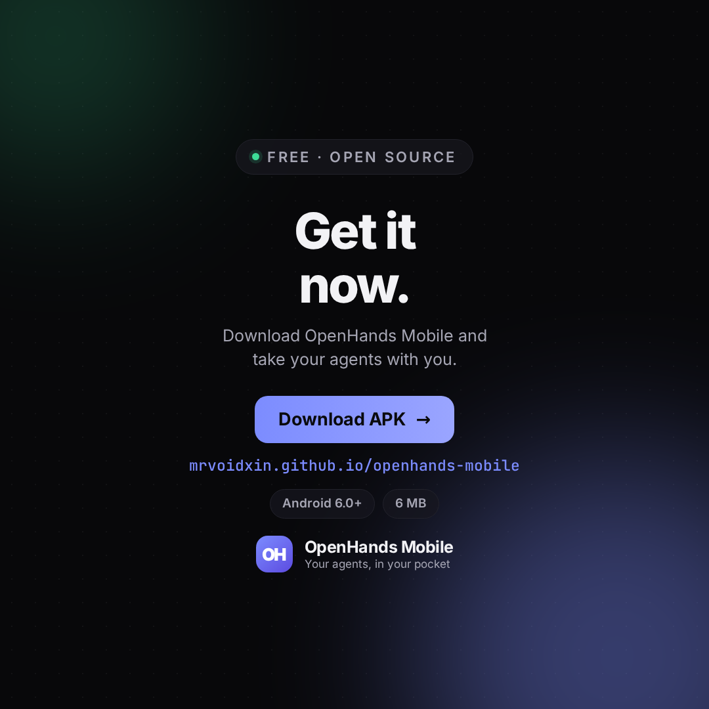
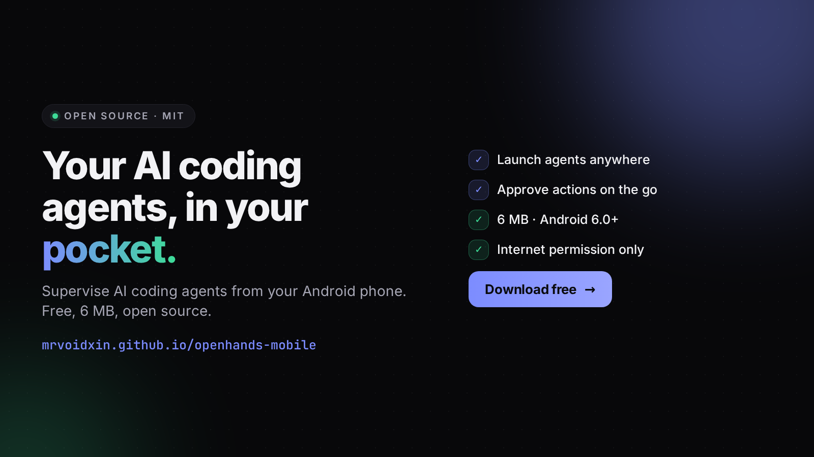

Ready-to-post art and copy for OpenHands Mobile. On a phone, long-press an image to save it. The copy blocks have a Copy button.
Takes the most screen space in the feed, and the grid crop does not touch the content. Use these for the main post and each carousel slide.
Safe and familiar. Same design, still fully visible in the grid because the content sits in the centre.
For X, LinkedIn, Reddit or a GitHub social preview. Not for Instagram.
Post these three in order. A carousel shows the hook, then the reason, then the link.



If you prefer a square grid, use these instead of the 4:5 set.




Your AI coding agents, now in your pocket. OpenHands Mobile lets you run and supervise AI coding agents right from your Android phone. Watch the runs, approve actions, and keep things moving without opening a laptop. Free and open source (MIT) Just 6 MB, Android 6.0 and newer Only asks for internet access New versions install in place, no reinstall Download: https://mrvoidxin.github.io/openhands-mobile/ Note: the app is a client, so you need your own OpenHands server running. Link in the comments too.
OpenHands Mobile - your AI coding agents, in your pocket. Ever wanted to check on an agent run while you are away from your desk? OpenHands Mobile brings your AI coding agents to Android. Launch runs, watch what they are doing, and approve actions, all from your phone. It is a native Android shell around the OpenHands Agent Canvas. Connect it to an OpenHands server on your laptop, a VPS, or the cloud, and your whole workflow fits in your pocket. Why you will like it: - Supervise agents remotely, no laptop needed - Lightweight: 6 MB download, about 12 MB installed - Asks for internet access and nothing else - Clean updates that install straight over the old version - Free and open source under the MIT licence - Works on Android 6.0 and newer Get it here: Landing page and download: https://mrvoidxin.github.io/openhands-mobile/ Source code: https://github.com/mrvoidxin/openhands-mobile Good to know: the app is a client. It needs an OpenHands agent server that you run yourself, and it does not ship one. It is also a community packaging, not an official OpenHands release. If it is useful to you, a star on the repo goes a long way. #OpenHands #AIAgents #Coding #Android #OpenSource #DevTools #SelfHosted #Programming #AITools
Direct download: https://github.com/mrvoidxin/openhands-mobile/releases/latest/download/app-release.apk Full info and screenshots: https://mrvoidxin.github.io/openhands-mobile/ Heads up: you need your own OpenHands server running for the app to connect to. Works on Android 6.0 and newer, about 6 MB, MIT licensed.
Live page: mrvoidxin.github.io/openhands-mobile · Source on GitHub